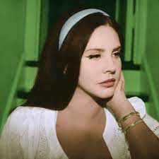

LANA DEL REY

Lana Del Rey, nome artístico de Elizabeth Woolridge Grant, é uma cantora e compositora norte-americana conhecida por sua voz melódica e suas letras nostálgicas e melancólicas. Sua carreira deslanchou em 2011 com o lançamento do álbum "Born to Die", que a catapultou para o estrelato.
Sua música muitas vezes evoca uma sensação de glamour vintage, combinada com temas de amor, solidão e nostalgia, criando uma atmosfera única que a tornou uma figura icônica na cena da música alternativa. Lana Del Rey é apreciada por sua estética cinematográfica e seu estilo retro, que a diferencia de muitos outros artistas contemporâneos.
Ao longo de sua carreira, ela lançou diversos álbuns aclamados, incluindo "Lust for Life" e "Norman Fucking Rockwell!", que demonstram sua versatilidade artística e maturidade como compositora. Ela continua a cativar fãs ao redor do mundo com sua música introspectiva e envolvente.
Lana Del Rey é uma artista singular que deixou uma marca duradoura na música pop contemporânea, combinando sofisticação musical com uma aura vintage que a torna verdadeiramente única. Seu trabalho continua a inspirar e emocionar muitos ouvintes em todo o mundo.
.jpeg) 3 curiosidades sobre ela: Nome artístico inspirado em nomes icônicos: Lana Del Rey escolheu seu nome artístico inspirada na combinação do nome da atriz Lana Turner e do carro Ford Del Rey. Ela queria criar uma persona que evocasse uma mistura de glamour de Hollywood com nostalgia vintage, o que se reflete em sua música e estilo.
Mudança de gênero musical: Antes de se tornar Lana Del Rey, ela lançou músicas sob seu nome de nascimento, Lizzy Grant, com um estilo mais voltado para o folk. Sua mudança para o estilo retro e dream pop que a tornou famosa ocorreu quando ela decidiu criar a persona Lana Del Rey, demonstrando sua versatilidade artística.
Início da carreira na internet: Lana Del Rey inicialmente ganhou reconhecimento na internet. Seu videoclipe caseiro da música "Video Games" se tornou viral em 2011, lançando sua carreira. Isso demonstra como as plataformas online e as redes sociais podem desempenhar um papel fundamental no sucesso de artistas emergentes.
3 curiosidades sobre ela: Nome artístico inspirado em nomes icônicos: Lana Del Rey escolheu seu nome artístico inspirada na combinação do nome da atriz Lana Turner e do carro Ford Del Rey. Ela queria criar uma persona que evocasse uma mistura de glamour de Hollywood com nostalgia vintage, o que se reflete em sua música e estilo.
Mudança de gênero musical: Antes de se tornar Lana Del Rey, ela lançou músicas sob seu nome de nascimento, Lizzy Grant, com um estilo mais voltado para o folk. Sua mudança para o estilo retro e dream pop que a tornou famosa ocorreu quando ela decidiu criar a persona Lana Del Rey, demonstrando sua versatilidade artística.
Início da carreira na internet: Lana Del Rey inicialmente ganhou reconhecimento na internet. Seu videoclipe caseiro da música "Video Games" se tornou viral em 2011, lançando sua carreira. Isso demonstra como as plataformas online e as redes sociais podem desempenhar um papel fundamental no sucesso de artistas emergentes.
.jpeg)